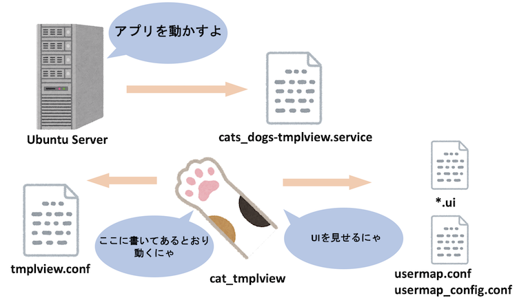
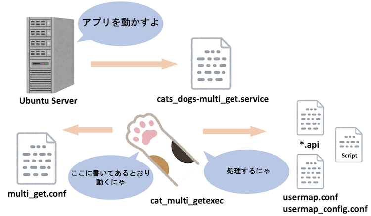
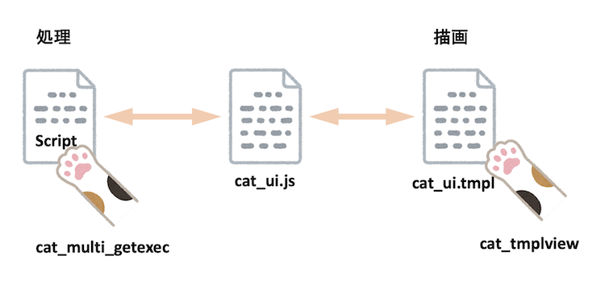
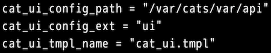
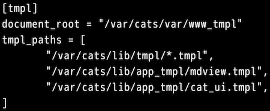
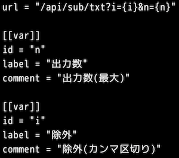
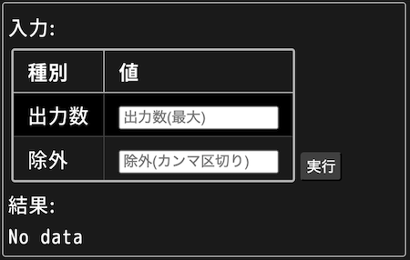
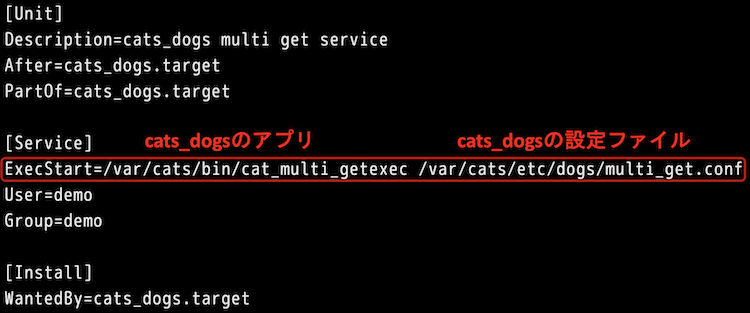
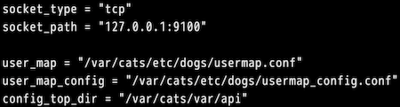
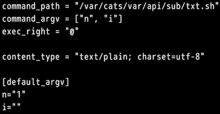

おはようございます。こんにちは。こんばんは。ふぇにっくちゅん です。
今回は cats_dogs で簡単な Web UI を作成できる Cat UI の機能について解説します。
Cat UI は cat_multi_getexec と呼ぶモジュールで、デモ動画では /var/cats/bin/ に配置しています。
この cat_multi_getexec は、前回の記事で紹介した cat_tmplview（拡張版 Markdown アプリ）と連携して動作します。
Cat UI を作成する際の手順は、以下のとおりです。
本記事では、簡単なサンプルを例に Cat UI の作成方法について解説します。
この Cat UI は設定ファイルが多いため、まずは全体像を把握していきましょう。
まず、設定ファイルは大きく3種類に分類できます。
今回は、2種類のアプリが登場します。
cat_tmplview と cat_multi_getexec です。
Cat UI を作成する場合、Markdown 上に UI の表示を記述するため、cat_tmplview を必要とします。
UI の動作を決める設定ファイルは、2種類存在します。
これらのファイルは、それぞれ拡張子が .api と .ui となります。
ここで、cat_tmplview と cat_multi_getexec の役割を説明しておきます。
cat_tmplview は、Markdown を HTML へ変換することで、ブラウザで文章を閲覧できるアプリです。
Cat UI と連携する場合には、cat_multi_getexec の入力を受け取ったり、処理結果を表示するための描画部分も担当します。
cat_multi_getexec は、UI から受け取った入力をもとに、処理を実行し、その結果を返すことを担当します。


UI の表示を担う cat_tmplview は、先述した設定ファイルだけでは動きません。
ここでは、UI を実現するためのファイルを紹介します。
cat_tmplview は、Markdown ファイルから UI を表示させるためのファイルが2つあります。
UI を簡単に実現するためのテンプレートファイルとして、cat_ui.tmpl があります。
また、HTML の動的な処理を補助するための cat_ui.js という JavaScript があります。
cat_tmplview を少し思い出してみると、ユーザやグループ単位で表示内容を動的に切り替える機能があります。
これを実現するために、Markdown ファイルに go のテンプレートの記述が必要でした。
UI を表示する際にも、Markdown ファイルに UI 用の記述を行います。
その際に、読み込まれる UI 用のテンプレートファイルが、cat_ui.tmpl です。
cat_ui.js は、UI 上の動的な処理を実現するためのファイルです。
このファイルは、cat_ui.tmpl で描画された内容を、支援するためのものです。
つまり、具体的な処理を行うスクリプトファイルと、テンプレートで描画されたコンテンツの仲介役となります。

cat_ui.tmpl と cat_ui.js はどちらも cats_dogs に内包されています。
もう少し詳細を知りたい方は「Cat UI の動作概略」を御覧ください。
ここからは、設定ファイルについて解説していきます。
描画を担う cat_tmplview と、処理を担う cat_multi_getexec のパートに分けて説明します。
cat_tmplview は、前回の記事で紹介しているため、ここでは UI に関係する箇所だけ説明します。
まず、動作を決める設定ファイル tmplview.conf の、UI に関する箇所は以下のとおりです。

デモで利用した設定ファイルは、こちらです。
この記述により、描画に利用する UI の設定ファイルやその拡張子、UI を作成するためのテンプレートファイル名を指定します。
また、テンプレートファイルの置き場所は、以下のパートで指定します。

次に、具体的な UI の設定ファイルを説明します。
まず、デモでは /var/cats/var/api/ のディレクトリの中に、拡張子が .ui のファイルを配置しました。
たとえば、txt.ui を見てみましょう。

説明の前に、以下に UI の完成図を示します。

まず、UI の裏で処理されるスクリプトの引数が2つあるということを前提とします。
その上で url には、スクリプトを実行するリクエストの URL を決めます。
つまり、url に記述されたパスとクエリを要求されると、処理が実行されるようになります。
次に、[[var]] パートです。
ここでは、UI 上に表示する入力ボックスなどを決めることができます。
この例のスクリプトを実行するには、2つの引数が必要でした。
そのため、2つの引数を閲覧者から得るために、設定しています。
また、この UI を表示するための Markdown ファイルには {{cat_ui "txt"}} を記述します。
この記述を行ったページに、上記の UI が表示されます。
詳しい説明は cat_tmplview の仕様書に記載しています。
「UI設定ファイル(cat_uiテンプレート関数で利用)」を御覧ください。
ここからは、具体的な処理を実現する cat_multi_getexec の設定ファイルについて説明します。
このアプリが参照する設定ファイルは以下のとおりです。
処理を実行するアプリを稼働させるファイルは、cats_dogs-multi_get.service という設定ファイルです。
以下に、デモで利用したファイルを示します。

このファイルは、アプリをどのように稼働させるかが記述されています。
これまで紹介したアプリと同様に、ExecStart の右には、稼働させるアプリの配置場所、稼働させるアプリが参照する設定ファイルを記述しています。
参照する設定ファイルは、アプリがどのように動作するかが記述されたファイルです。
このファイルで、アプリが稼働するようになります。
処理を実行するアプリの動作を決めるのが multi_get.conf の設定ファイルです。

ここでは、実行するスクリプトの実行権を決めるために usermap.conf と usermap-config.conf を指定します。
また、api の拡張子を持つファイルの配置場所を設定します。
具体的な処理は、スクリプトに依存するため、multi_get.conf では具体的には設定しません。
代わりに、api の拡張子のファイルをスクリプトごとに作成することで動作を決めます。
次に、具体的な処理を決める設定ファイルを説明します。
まず、デモでは /var/cats/var/api/ のディレクトリの中に、拡張子が .api のファイルを配置しました。
たとえば、txt.api を見てみましょう。

この設定ファイルでは、実行するスクリプトの配置場所、引数、実行権限の指定を行います。
引数のデフォルト値も設定することができます。
ここでは、スクリプトの説明はしませんが、参考までに txt.api で実行されるスクリプトはこちらを御覧ください。
また、設定ファイルの詳細はこちらを御覧ください。
最後に、Cat UI の作成を支援してくれる仲間を紹介します。
実は、すでに紹介した cat_ui.js も支援してくれる仲間です。
ここで紹介するのは、実際に処理を実現するスクリプトの作成を支援してくれるツールです。
それらは、cat_printcsv、cat_args2csv、cat_verify_type の3つです。
CSV を扱う場合やネットワーク情報を扱う場合に、必要があれば利用ください。
別に UI は必要なく、単なる API として利用したい場合は、cat_getexec も用意しています。
このアプリは cat_multi_getexec の仲間です。
設定ファイルについては、これまで説明した内容に近いため、皆さん自身で仕様書を読み進められると思います。
cat_getexec は、UI が必要ではないため、cat_tmplview とは連携が必要ありません。
そのため、このアプリだけで API が実現できるようなシンプルな作りになっています。
こちらも利用する場合には、API ごとにアプリを稼働させて使ってください。
今回解説した Cat UI は、これまで解説してきたアプリよりも複雑だったかもしれません。
ここまで読み進められたということは、仕様書も読みやすくなっていると思います。
最終回は「cats_dogs の仲間について解説するよ」で、フォントの変更や Markdown ファイルの更新状況を取得する方法について、解説します。